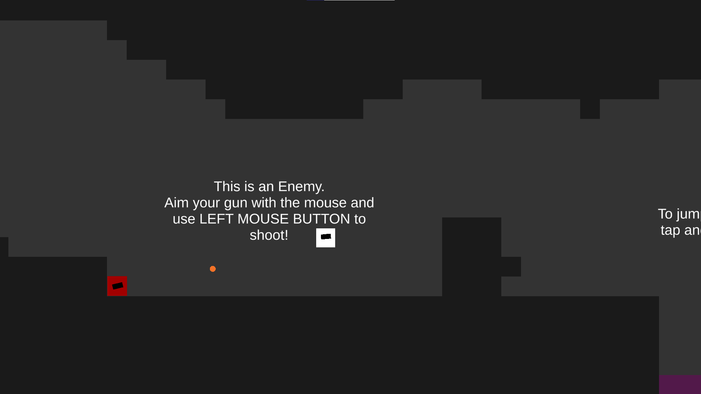
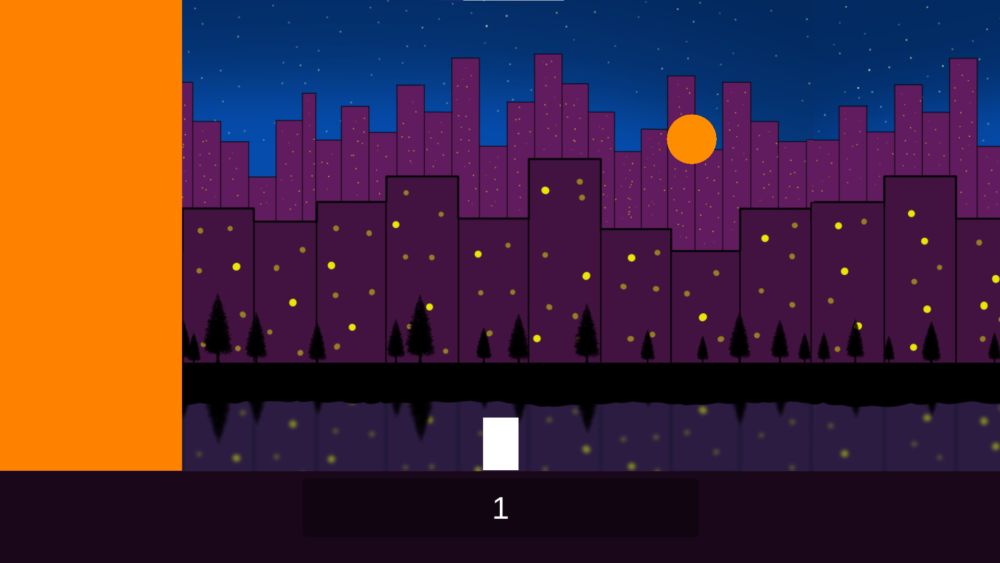
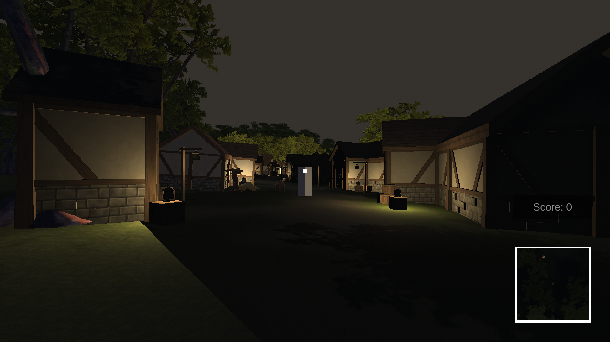

My name is Conner Smith
I am an indie game developer who is specialising in gameplay programming. I currently specialise in the Unity Engine and use c# as my primary programming language.
I also have experience with programming in Python as well as basic training in Maya and Blender for 3D modelling and animation. I have chosen to specialise in this field because of
my natural curiosity towards the creation process of many memorable mechanics such as the portal gun from Portal or the dead eye mechanic from Red Dead Redemption.
2DPSWAI (2D Platform Shooter With AI)

This was a project that I completed in a 2 week break. The game includes my first attempt at basic AI as well as a dynamic jump mechanic which allows for the player to have better control over their movement.
Rapture Run (Culture themed College Project)

This is a project that I completed in 4 weeks. The game includes some of my first attempts at randomised, infinite levels using arrays as well as my first attempt at 2D background art.
Very Hungry Catterpillar (Book themed College Project)
This is a project that I completed within 4 weeks based around a book called "The Very Hungry Catterpillar". The game includes my first attempt at a fully completed 2D platformer game.
Robin Hood's Cash Stash ("Myths and Legends" themed College Project)(Final Major Project Year 1)

This is a project that I spent 12 weeks on as my final major project for my first year at College. The game includes a fully explorable 3D world with enemies that follow you and a shooting mechanic.
Coin Campo ("One More Go" themed College Project)
This is a project that I completed within 6 weeks based around the theme of wanting "One More Go". The game includes enemies inspired by Super Mario Bros as well as a key/door system to pace the player.
Impington Village College (GCSEs):
English Language - 6
English Literature - 6
Maths - 5
Combined Science - 6 / 6
Computer Science - 6
Design and Technology - 6
History - 4
Cambridge Regional College:
UAL Level 3 Diploma Creative Media Production & Technology (Games Development) - D - 84 Ucas tariff points
UAL Level 3 Extended Diploma Creative Media Production & Technology (Games Development) - D - 168 Ucas tariff points

Planet Zoo (October 2019 - October 2019 (1 day)):
As a side project, a select few people from my course (me included), were given the opportunity to visit Frontier Developments to take part in last minute QA testing before the game's release.
We were given the task of playing through the tutorials and introduction levels and document any bugs or issues that we experienced. I decided to focus on player experience instead of technical or
graphical issues and managed to document and bring to light some issues with the placement tool, which was quickly fixed before release.